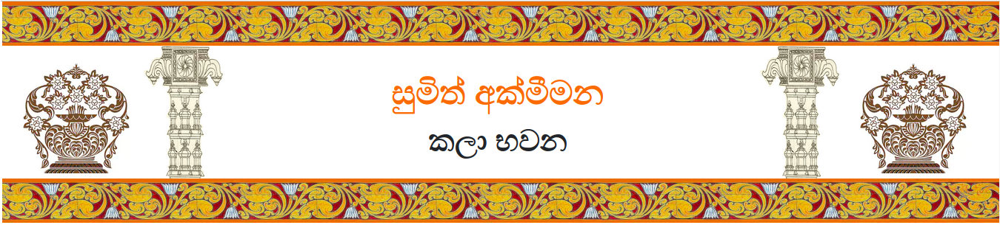
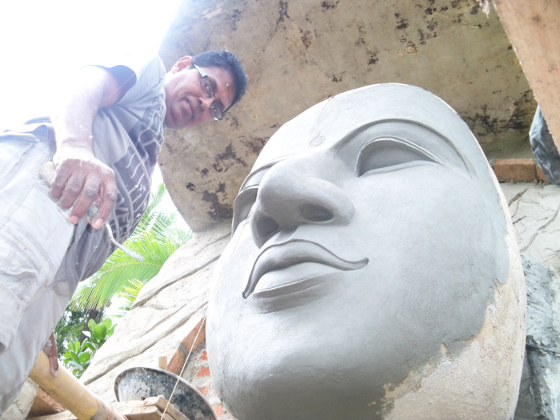
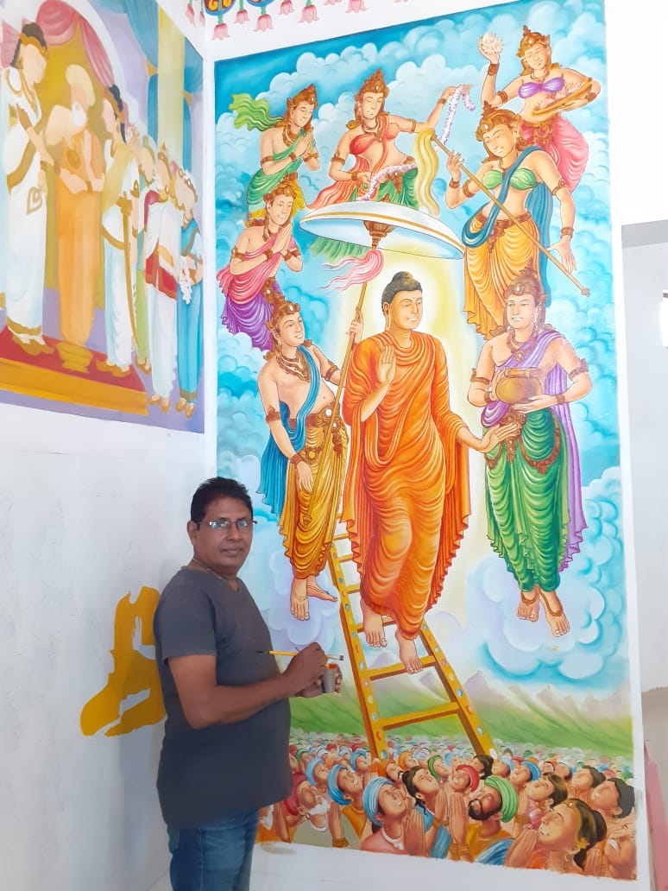
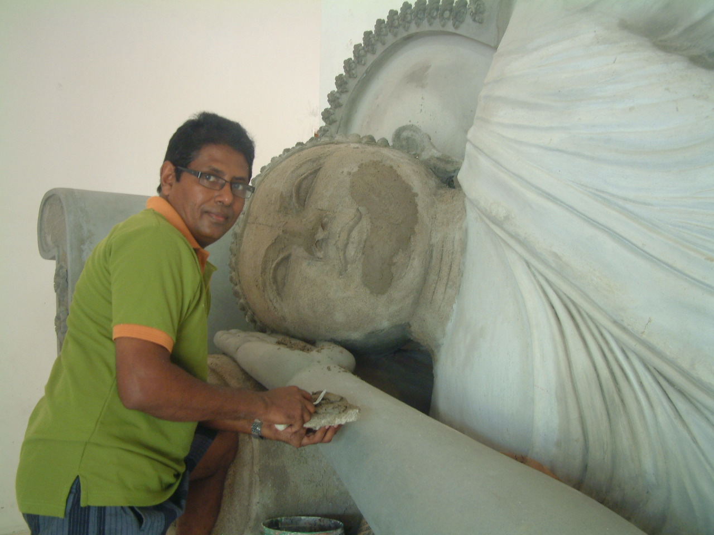

අප මෙතෙක් සපයා ඇති නිර්මාණ දායකත්වය
- ධම්මකිත්තිකාරාමය , කොට්ටාව
- ධම්මවිජයාලෝක විහාරය , රුක්මල්ගම ,කොට්ටාව
- මහාබෝධි විහාරය , ඉන්දියාව
- විජිතාරාමය , ඇඹුල්දෙනිය , නුගේගොඩ
- සමාධි විහාරය , කොතලාවලපුර , රත්මලාන
- සුවිශුද්ධාරාමය , වැල්ලවත්ත
- සද්ධර්මාරාමය , වැල්ලවත්ත
- ධර්මේන්ද්රාරාමය , ගල්කිස්ස
- ධම්මින්දාරාමය , රත්මලාන
- මාලිකාරාමය , කරදියාන
- පුරාණ විහාරය , කුඹුක , ගෝනපොල
- පූර්වාරාමය , හොරණ
- මීගමුව මහ රෝහලේ බුදු මැදුර
- කොට්ටාව ආනන්ද විදුහලේ බුදු මැදුර
- ගල්කිස්ස විද්යා විද්යාලයේ බුදු මැදුර
- ගල් විහාරය , දෙහිවල
- මැදගම්ගොඩ විහාරය , වලස්මුල්ල
- සිරි ධම්මාරාමය , පිටිදූව , හබරාදුව , ගාල්ල
- ශ්රී සරණංකරාරාමය , මදුරන්කුලිය , පුත්තලම
- ආනන්දාරාමය , ගල්නෑව , අනුරාධපුර
- ශ්රී සුධර්මරත්න විහාරය , කිරිගම්පමුණුව , කහතුඩුව
- ශ්රී සුදර්ශනාරාමය , පොල්ගස්ඕවිට
- ශ්රී සුදර්ශනාලංකාර විහාරය , මාකන්දන , පිළියන්දල
- චේතියාරාමය , කිඳෙල්පිටිය
- ශ්රී සුධර්මාරාමය , නාන්දූව , මොරොන්තුඩුව
- සද්ධර්මාරාමය , කහපොල
- විජයාරාම රජමහා විහාරය , විජේරාම , නුගේගොඩ
- මීගහවත්ත විහාරය , කඩුවෙල
- ශ්රී ආනන්දාරාමය , ලුණුගම්වෙහෙර
- රන්කොත් වෙහෙර රජමහා විහාරය , සූරියපොකුණ , අඟුණුකොලපැලැස්ස , තංගල්ල
- විජය නන්දනාරාමය , එගොඩවත්ත , පිළියන්දල
- සත්බුදු මහා විහාරය , පැලැන්වත්ත . පන්නිපිටිය
- ශ්රී සුධර්මාලංකාර විහාරය , මකුළුදූව , පිළියන්දල
- ලේඛකාරාමය , රයිගම
- ශ්රී ලංකා විද්යාලය , මරදාන
- සුදු වැල්ල විහාරය , සුදු වැල්ල , මරදාන
- ඔසු අරණ විවේක සේනාසනය , තුඩුහේන , මාකන්දන
- ධර්මපාලාරාමය , දෙහිවල
- ප්රතිබිම්බාරාමය , කළුබෝවිල
- සුධර්මාරාමය , වැල්ලවත්ත
- මේධංකර විහාරය , දෙහිවල
- සිරි ධම්මාරාමය , නුගේගොඩ හන්දිය , නුගේගොඩ
- පුෂ්පාරාමය , පාමංකඩ
- ස්වර්ණ පෙදෙස විහාරය , වැල්ලවත්ත
- මෙත්තාරාමය , බම්බලපිටිය
- නන්දාරාමය , නිවුන්ගම , කැස්බෑව
- හේවිසිගල විහාරය , ගාල්ල
- අභයනන්දනාරාමය , කැස්බෑව
- කැස්බෑව පිරිවෙන , කැස්බෑව
- වල්ගම විහාරය , බණ්ඩාරගම
- සුගතදක්ෂිනාරාමය , වැල්ලවත්ත
- නයි දූව , මාදු ගඟ , බලපිටිය
- සුදර්ශන ධම්මනිකේතාරාමය , කරගම්පිටිය , දෙහිවල
- සිරි නිකේතාරාමය , නාම්පමුණුව , පිළියන්දල
- ගෝනගංආර විහාරය , මොණරාගල
- ශ්රී විමලාරාමය , හල්පිට
- මන්ත්රීමුල්ල විහාරය
- සිළුමිණි විහාරය , කහපොල
- ශ්රී ශාන්ත්යාරාමය , පොල්හේන , කැලණිය
- ශ්රී විජයාරාමය , මානික්කවත්ත , අවිස්සාවේල්ල




ප්රධාන සේවා
බෞද්ධ විහාර නිර්මාණය
බෞද්ධ බිතු සිතුවම්
බුද්ධ ප්රතිමා
දේව ප්රතිමා (දේවාල තුළ)
බෝධි ඝර
ස්ථූප
මකර තොරණ
වාහල්කඩ
සඳකඩ පහණ
මුරගල්
කොරවක් ගල්
බෞද්ධ විහාර නිර්මාණය
බෞද්ධ බිතු සිතුවම්
බුද්ධ ප්රතිමා
දේව ප්රතිමා (දේවාල තුළ)
බෝධි ඝර
ස්ථූප
මකර තොරණ
වාහල්කඩ
සඳකඩ පහණ
මුරගල්
කොරවක් ගල්
සෙසු සේවා
තෙල් සායම් චිත්ර
දිය සායම් චිත්ර
පැන්සල් චිත්ර
ඡායාරූප ඇඳීම
වාස්තු උපදේශන සේවය
පරිශීලනය සඳහා
 යූටියුබ් වාර්තා වැඩසටහන
යූටියුබ් වාර්තා වැඩසටහන
( දායකත්වය ජාතික රූපවාහිනිය මගිනි )
තෙල් සායම් චිත්ර
දිය සායම් චිත්ර
පැන්සල් චිත්ර
ඡායාරූප ඇඳීම
වාස්තු උපදේශන සේවය
පරිශීලනය සඳහා
යූටියුබ් වාර්තා වැඩසටහන ( දායකත්වය ජාතික රූපවාහිනිය මගිනි )
| සබඳතා |
 සුමිත් අක්මීමන සුමිත් අක්මීමන
|
 94 777 762 041 94 777 762 041
|
 94 777 762 041 94 777 762 041
|
 94 777 762 041 94 777 762 041
|
 sumith.artwork@gmail.com sumith.artwork@gmail.com
|